-
Lao (Tai-Kadai, Laos)
man2 paat5 khòò2 taaj3
3SG slice neck die
“He killed (it) by slicing (its) neck.”
Naomi Peck
Lao (Tai-Kadai, Laos)
man2 paat5 khòò2 taaj3
3SG slice neck die
“He killed (it) by slicing (its) neck.”
Kalam (Trans-New-Guinea, Papua New Guinea)
As nb-ak yg pak d ap ñb-l…
small_mammal like-this dig kill get come eat-SS.PRIOR
“After digging up, killing, bringing (home) and eating this kind of animal…”
→ this doesn’t say anything about the function of an SVC
one SVC
=
multiple subevents
one event
one macroevent
multiple events
None of these.
“a segment of time at a given location that is perceived by an observer to have a beginning and an end”
“a segment of time at a given location that is perceived by an observer to have a beginning and an end”
“a segment of time at a given location that is perceived by an observer to have a beginning and an end”
“a segment of time at a given location that is perceived by an observer to have a beginning and an end”
“a segment of time at a given location that is perceived by an observer to have a beginning and an end”



Do mental models of eventhood underlie acts of reporting, or is it rather that actual acts of narration are the source
of notions about abstract, mentalistic eventhood?
Do mental models of eventhood underlie acts of reporting, or is it rather that actual acts of narration are the source
of notions about abstract, mentalistic eventhood?
… an intonation unit can express no more than one new idea. In other words thought, or at least language, proceeds in terms of one such activation at a time, and each activation applies to a single referent, event, or
state, but not to more than one.
… an intonation unit can express no more than one new idea. In other words thought, or at least language, proceeds in terms of one such activation at a time, and each activation applies to a single referent, event, or
state, but not to more than one.
… an intonation unit can express no more than one new idea. In other words thought, or at least language, proceeds in terms of one such activation at a time, and each activation applies to a single referent, event, or state, but not to more than one.
Chafe (1994):
Reinöhl et al. (2023):
three languages from Northeast India
~30 minutes of text annotated per language for
Galo (origins_0236)
paadᵊm-ə aa-la | pa-pak-daa-ku-da
Padam-DET come-CV (85ms) kill-rid-ACHV-CMPL-RCUR
{} {129} {} {130}
“(When one of the Mising’s children grew up enough…) the Padam would come and just kill (them) flat out.”
Kera’a (dogstory_018)
paku=wa | iyi ja-me u su-te-ya-ba
field=TOP (=) pig come-CV dig put_in_hole-TEL-PFV-go
{} {} {} {007} {008} {}
“The pig was working hard at digging the field with its nose.”
Galo (MKDiimi_075)
tollo in-da | aa-nɨk-da | tollo in-da aa-nɨk-da
up go-fast (=) come-near-fast (=) up go-fast come-near-fast
{} {033} {} {034} {} {} {033} {034}
“…he starts going up and back, going up and back…”
Duhumbi (butterfly_053)
ogi | namsa tor-da | yet-da ong-ba=le
that (1315ms) consciousness spread-CV (=) flee-CV go-NMLZ-COP
{} {} {} {017} {} {019} {}
“it (the deer) … fled away being startled.”
Duhumbi (butterfly_054)
yet-ong-ba-kho=na
flee-go-NMLZ-LOC=COND
{019}
“so when fleeing away…”
Kera’a (dogstory_034)
u-me e=wa-da | do-ya-da
LOG-NOM do=TOP-DECL (178ms) finish-PFV-DECL
{} {016} {} {017}
“He (said), I did it, I finished it.”
Kera’a (dogstory_043)
iku-me e do-ya a=bu-da
dog-NOM do finish-PFV like_this=ADD-DECL
{} {016} {017} {025}
“The dog was like, I finished doing it.”
Kera’a (anjaji_009)
imu shi a-ja-ne | imu dõ a-za
people die like_this-VEN-CV (=) people finish like_this-VEN
{} {003} {} {} {} {004} {}
“when all people die and no-one remained…”
Kera’a (anjaji_014)
… imu shi-ndõ-ba-da-ho
{} people die-finish-go-DECL-WHEN
{} {} {007}
“… when all the people died (completely)…”
Meanings represent a conceptualization of experience – that is, how speakers package that experience for the
goals that they wish to attain in discourse.
Meanings represent a conceptualization of experience – that is, how speakers package that experience for the
goals that they wish to attain in discourse.
My first thanks go to the Kera’a, Galo, and Duhumbi communities, who made this work possible. Special thanks go to Hane Mipi, Khuna Tayu, Kamadi Tayu, Tokhi Mihu, Apasi Tayu and Jagri Mipi for helping me with the data collection and analysis, to Mark Post and Tim Bodt for making their corpora available for further scientific use, and to Laura Schleicher for her help with data processing.
Further thanks go to Uta Reinöhl, Maria Vollmer, Simon Fries, Kirsten Culhane, T. Mark Ellison and Maria Bardají i Farré for discussing various aspects of the research with me.
This project was funded by Deutsche Forschungsgemeinschaft (DFG) Project number 406074683.
Email: naomi.peck@linguistik.uni-freiburg.de
Website: naomipeck.com
Find the presentation here: QR code
Serial verbs package information, not events